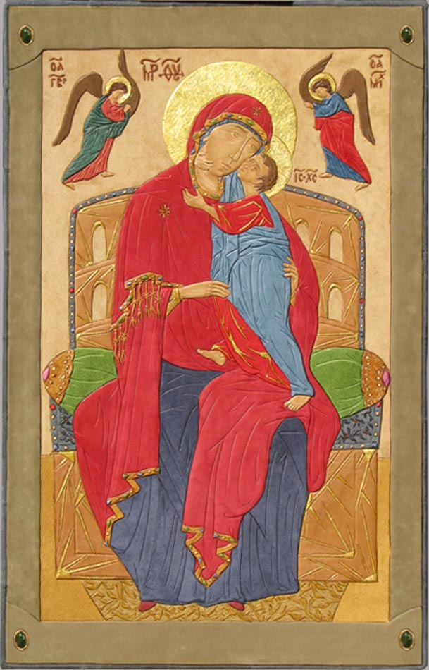

.Толгская Икона Божией Матери
Кожа, нефрит, сусальное золото.
65 см х 41 см.
Tolg Icon Mother of God.
Leather, nephrite, tinsel, gold leaf.
65 cm x 41 cm.
Толгська Ікона Божої Матері.
Шкіра, нефрит, сусальне золото.
65 см x 41 см.